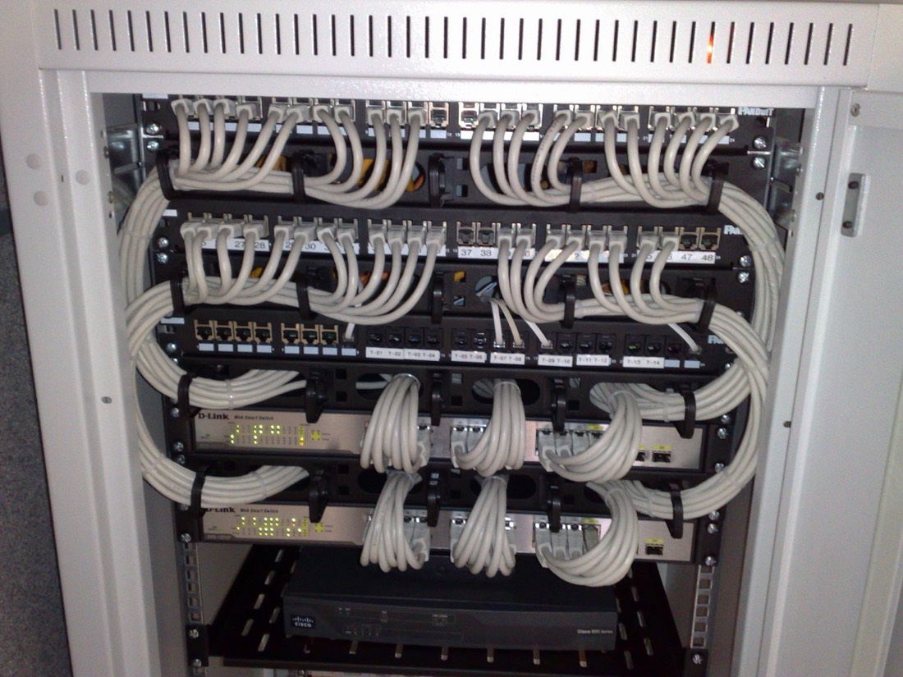
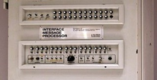

Computer Networks
You type a web address and, a moment later, a page appears — but in between a URL is split apart, a name is turned into an IP address by DNS, a client and a server shake hands, an HTTP request crosses routers and switches, and the answer is cut into packets and reassembled. This chapter follows that journey layer by layer through the Internet, then ends at its newest edge: the Internet of Things and AI that runs on the device itself.
From a typed URL to a page on the screen

9.1What is a computer network?
A computer network is a set of computing devices joined by a transmission medium so that they can cooperate, share resources and exchange information. Its whole purpose is to remove distance as an obstacle. Today the "devices" are not only PCs but phones, tablets, printers, cameras and sensors — the Internet of Things you will meet at the end of this chapter.
Networks are classified by how far they reach:
| Type | Reach | Typical example |
|---|---|---|
| PAN — personal area | a few metres around one person | phone ↔ earbuds over Bluetooth |
| LAN — local area | a home, school, computer lab or office building | the PCs of a lab joined by one switch |
| WLAN — wireless LAN | a LAN where devices talk through a central access point | campus Wi-Fi |
| MAN — metropolitan area | a city, up to about 50 km | a city-wide fibre ring |
| WAN — wide area | countries or the whole globe, over private or public carriers | an ISP backbone, the Internet |
Organisations also talk about intranets and extranets. An intranet is a private network inside one organisation that uses ordinary web technology — browsers and web pages — for things like the staff directory or internal job postings. An extranet is the same idea stretched across more than one organisation: a supplier, for example, gets limited access to a company's system. Both are about who is allowed in, not about physical size.
9.2Who talks to whom: client–server and peer-to-peer
Network software is made of processes — programs that are running. Two processes on the same machine talk through the operating system; processes on different machines exchange messages over the network. The process that starts the conversation is the client process; the one that waits to be contacted is the server process. (Even in a peer-to-peer system each peer plays both roles, depending on the moment.)
| Client–server | Peer-to-peer (P2P) | |
|---|---|---|
| Who serves? | one always-on server (often a farm of them in a data centre) | every peer both asks and serves |
| Strength | central management, easy security, backup and recovery | scales by itself — each newcomer adds capacity — and needs no server hardware |
| Weakness | server cost; if it dies, everybody is stuck (a single point of failure) | hard to manage and secure; speed depends on whoever is online |
Real systems are often a hybrid: a central server handles the directory or login, while the heavy data moves directly between peers. Whatever the architecture, the two sides need an application-layer protocol — an agreement on the types of message (request, response), their syntax (which fields, how separated), their meaning, and the rules for who speaks when. Public protocols such as HTTP and SMTP are written down in documents called RFCs, so anyone can build compatible software; a proprietary protocol (the lecture slides' example is Skype) is controlled by one company.
| Application | Protocol | Transport | Today |
|---|---|---|---|
| Web | HTTP (RFC 9110) | TCP (HTTP/3 uses QUIC over UDP) | slides cite RFC 2616, which has been replaced |
| E-mail (sending) | SMTP (RFC 5321) | TCP | slides cite RFC 2821, now obsolete |
| File transfer | FTP | TCP | plain FTP sends passwords unencrypted; SFTP/HTTPS are preferred |
| Remote terminal | Telnet | TCP | sends everything, passwords included, in plain text — replaced by SSH |
| Streaming, voice/video calls | RTP, SIP, proprietary | usually UDP | late packets are useless, so speed beats perfect delivery |
9.3The parts of a network: end devices, channels, and the boxes in between
A network has three kinds of parts. End devices (PCs, phones, servers) are where messages start and finish — they are the only devices that run your applications. The communication channel carries the packets. And the intermediate devices steer them. Each one works at a different layer (the layers are explained in 9.6):
| Device | Layer | What it looks at | What it does |
|---|---|---|---|
| Repeater / hub | 1 · physical | nothing — just signals | amplifies and copies a signal from one port to all the others; every device shares one collision domain, so a bigger hub network gets slower. Obsolete for LANs. |
| Bridge / switch | 2 · link | destination MAC address | learns which MAC lives behind which port (its CAM table) and forwards a frame only there; gives each port its own collision domain, but still passes broadcasts to everyone |
| Router | 3 · network | destination IP address | picks the next hop using a routing table; joins different networks and stops broadcasts |
| Gateway | up to 7 · application | the message format itself | a translator between systems that use different protocols or data formats. (Everyday usage: the "default gateway" in your settings is simply your router.) |
Three technologies protect a network. A firewall controls what may enter and leave, filtering traffic by rules. An intrusion detection system (IDS) watches traffic for signs of attack and raises the alarm. A virtual private network (VPN) builds an encrypted tunnel across the public Internet so a remote user can safely reach the organisation's internal network. (Security is the subject of Chapter 12.)
9.4Cables, radio and topologies
Wired links use a solid conductor. Twisted pair — copper wires twisted together to cancel interference — is inside telephone lines and Ethernet cables. Coaxial cable has a single solid copper core and carries high frequencies (cable TV and broadband). Fibre optic sends data as pulses of light through glass: very fast, and it loses little signal over long distances, which is why the Internet backbone is made of it.
Wireless links use radio waves (or light) through the air: Wi-Fi (the radio technology of most home and office networks), Bluetooth (short range, personal devices), cellular (towers serving small geographic "cells"), microwave links (line-of-sight between buildings), satellite, and infrared (very short range, line of sight). The slides also list WiMAX, a long-range microwave technology; it is rarely deployed today — operators such as Sprint chose LTE instead — so treat it as history. For tiny IoT sensors there are special low-power radio standards (RFID, Zigbee, LoRaWAN, BLE), met in 9.9.
| Wired (Ethernet) | Wireless (Wi-Fi) | |
|---|---|---|
| Speed & stability | steady, rarely disturbed | varies with distance, walls and other users |
| Mobility | tied to a socket | move freely |
| Set-up cost | cabling, patch panels, work | just access points |
| Security | an attacker needs physical access to the cable | signals leak through walls, so encryption is essential |
How devices are arranged is the topology:
| Topology | Good | Bad |
|---|---|---|
| Star | easy to manage and to troubleshoot; one broken cable only isolates one device | if the central switch fails the whole network is down |
| Bus | very little cable | a break in the main cable disables everyone |
| Ring | orderly: devices are chained in a closed loop | one failure can break the loop unless the ring is doubled |
| Mesh | many paths, so very reliable | cost grows quickly: a full mesh of n devices needs n(n−1)/2 links |
Big organisations combine these into an extended star (several stars whose centres are linked) or a hierarchical design (access switches → distribution → core). A modern lab or dorm floor is a star of stars: the best compromise, and the one you will design in the team activity.
9.5Addresses and names: ISP, IP, NAT and DNS
Your Internet service provider (ISP) — VNPT, Viettel and FPT are Vietnamese examples — runs the wide-area links and routers that connect you to the global Internet, and it hands out the addresses that make delivery possible. Every device on a network is identified by an IP address, the number routers read to decide where to send a packet. It is the postal address of a computer; a house number on the wrong street is useless, which is why IP addresses are structured: a network part and a host part.
| Local (private) IP | Public IP | |
|---|---|---|
| Valid | only inside one LAN | unique across the Internet |
| Given by | your router (DHCP) | your ISP |
| Typical ranges | 10.x.x.x · 172.16–31.x.x · 192.168.x.x | everything else |
| Routable on the Internet? | no | yes |
Because public addresses are scarce, the router performs NAT (network address translation): all the phones and laptops of a home use private addresses, and the router rewrites each outgoing packet so that it appears to come from the one public address the ISP gave the household. IPv4 addresses are 32 bits, written as four decimal numbers (192.0.2.1) — only 232 ≈ 4.3 billion in total, which is why IPv6 exists: 128 bits, written in hexadecimal groups (2001:db8::1).
Nobody wants to type 203.0.113.10, so the Domain Name System (DNS) — the Internet's giant phone book — translates names such as www.example.com into addresses. (The slides call it "domain name server"; DNS is the system, made of many servers.) No single server knows everything: the names form a hierarchy read right to left — www . example . com . (root) — and a lookup walks down it: a root server points to the .com servers, which point to the authoritative server of example.com, which finally gives the address. A recursive resolver (your ISP's or campus's) does this walk for you and caches each answer for its TTL — so most lookups never reach the root at all. Step through it in the Packet Journey lab.
$ dig example.com A +noall +answer +comments +stats ;; ->>HEADER<<- opcode: QUERY, status: NOERROR, id: 23961 ;; ANSWER SECTION: example.com. 244 IN A 104.20.23.154 ; name · TTL · class · type · address example.com. 244 IN A 172.66.147.243 ; several addresses are allowed ;; Query time: 52 msec $ dig example.com +trace +nodnssec # the walk down the hierarchy, abridged . 518400 IN NS a.root-servers.net. ; 13 root names com. 172800 IN NS a.gtld-servers.net. ; root → .com servers
Try it yourself Run nslookup example.com (Windows, macOS, Linux) or dig (macOS/Linux) in a terminal. The answers above depend on place and time — the site sits behind a content network — and are real, whereas the lab uses invented addresses on purpose: example.com is reserved for documentation, and the ranges 192.0.2.0/24, 198.51.100.0/24, 203.0.113.0/24 are reserved by RFC 5737 so examples never point at a stranger's machine. Supplementary
9.6Protocols and layers: OSI and TCP/IP
A protocol is a set of rules that controls the format, timing and exchange of data so that very different hardware and software can understand each other. It covers framing (marking where a message starts and ends), flow control (don't send faster than the receiver can take) and error control (detect damage and repair it). To keep this manageable the work is split into layers: each layer uses the one below and offers a service to the one above, so you can design a device — or hunt a fault — one layer at a time.
OSI (Open Systems Interconnection) is a reference model with seven layers: physical (raw bits and signals), data link (frames between neighbouring devices, using MAC addresses), network (logical IP addresses and the choice of route), transport (end-to-end delivery and error recovery), session (opening, keeping and closing a dialogue), presentation (translation, encryption, compression) and application (the interface to the user's software). TCP/IP is the model the real Internet is built on: it merges the top three OSI layers into one application layer and the bottom two into a network interface layer. TCP gives reliable, ordered delivery (like registered mail); UDP just sends and hopes (like a postcard) but is faster, which is why calls and games prefer it.
9.7The Internet, the Web, and HTTP
These two words are used as synonyms in daily life, but they live at different levels. The Internet is the global infrastructure: millions of networks joined by routers speaking TCP/IP. The Web is one application running on top of it — a system of linked pages served over HTTP. (E-mail, online games and video calls use the same Internet but are not the Web.)
A web page is a base HTML file plus the objects it refers to — images, style sheets, scripts, audio. Each object has its own address, a URL. The browser is the HTTP client; the web server (Apache, Nginx …) is the HTTP server. HTTP — the HyperText Transfer Protocol — is text: the client sends a request, the server sends back a response.
Anatomy of a URL Supplementary
https://www.example.com:443/docs/intro.html?lang=en#top └scheme └host (who) └port └path (what) └query └fragment (browser only)
The slides' example, www.someschool.edu/someDept/pic.gif, has a host name and a path name; the full form adds the scheme in front (http = port 80 by default, https = port 443) and optionally a port, query and fragment.
A real request and response Supplementary
> request (what the browser sends) GET / HTTP/1.1 ← method, path, version Host: example.com ← which site (one server, many sites) User-Agent: curl/8.7.1 Accept: */* < response (what the server sends back) HTTP/1.1 200 OK ← version, status code, reason Date: Sun, 18 Oct 2026 08:12:38 GMT Content-Type: text/html; charset=utf-8 ← what the body is Transfer-Encoding: chunked Server: cloudflare Allow: GET, HEAD ← which methods this resource accepts (blank line: end of headers; the HTML body follows) <!doctype html><html lang=en><head>… <title>Example Domain</title> …
A real server adds a few vendor-specific headers (cache and tracing information) that were removed above for clarity. Three things are worth noticing: HTTP is just lines of text; the request names the method and path; and the response begins with a status code a program can act on without understanding the page.
| Status | Meaning | When you see it |
|---|---|---|
| 200 OK | success, body follows | a normal page |
| 301 Moved Permanently | look at the Location header instead | a site changed its address |
| 403 Forbidden | understood, but you may not | no permission |
| 404 Not Found | server fine, nothing at that path | a broken link (I got this by asking for /nonexistent-page on the same site) |
| 405 Method Not Allowed | that method is not accepted here | I got this by sending POST to / |
| 500 Internal Server Error | the server's own program crashed | a bug on the site |
The first digit gives the family: 1xx information, 2xx success, 3xx redirect, 4xx you made a mistake, 5xx the server failed. The common methods are GET (read), HEAD (headers only), POST (send data, e.g. a form), PUT and DELETE (replace / remove). Plain HTTP is readable by anyone on the path; HTTPS is the same conversation inside an encrypted TLS tunnel, which is why the padlock matters on login pages. The authoritative description is RFC 9110. Supplementary

9.8Moving the data: bandwidth, packets, fragments and routes
Bandwidth is the capacity of a channel — how many bits it can carry per second. It is written in bits per second (kbps, Mbps, Gbps), whereas file sizes use bytes (1 byte = 8 bits), so a 100 Mbps line moves at best 12.5 MB per second. Real speed depends on the medium: optical fibre reaches gigabits per second, while an old dial-up modem was physically limited to 56 kbps; for radio links the bandwidth keeps changing with signal strength. (A "T1" leased line is 1.544 Mbps — about 0.19 MB/s.)
Data is not sent as one block. A message is cut into small packets, which may travel over different routes and be re-assembled at the destination. Why bother? Short packets let many conversations share a link in turns, a lost packet costs only a small resend, and the pieces can use several paths at once. The price: every packet needs a header with addresses and numbers. Going down the TCP/IP stack the data is encapsulated — each layer wraps what it receives in its own header (like putting a letter in an envelope, then in a parcel, then in a crate); going up the receiver unwraps it again.
Every link has a maximum transmission unit (MTU): the largest packet it can carry — 1500 bytes on Ethernet. Bigger packets are fragmented into pieces that carry their position, so the receiver can put them back together. (In practice TCP avoids IP fragmentation by cutting its segments to a maximum segment size of MTU − 40 bytes; the lab shows both.) On a noisy channel some packets are lost or damaged, so protocols use automatic repeat request (ARQ): stop-and-wait sends one packet and waits for its acknowledgement before the next — simple but slow — while Go-Back-N and Selective Repeat keep several packets in flight.
Finally, routing is choosing the path of each packet through a mesh of routers: each router consults a table and picks the next hop with the lowest cost. Routers build those tables with shortest-path algorithms: Dijkstra (link-state: every router knows the whole map) and Bellman-Ford (distance-vector: each router only trusts what its neighbours say). Dijkstra's algorithm is a close cousin of the graph searches you may meet in later courses; in §2.8 of the textbook you will route a file through a small network by hand (Exercises 1 and 2).
9.9The Internet of Things and edge AI
The Internet of Things (IoT) is the growing family of physical objects — field sensors, street lights, wristbands, machines — that carry a sensor, a little software and a network connection so they can collect data and exchange it continuously. It is a core part of "Industry 4.0", where the physical world and its digital model (a cyber-physical system) are tied together. The lecture slides, crediting Timothy Chou, describe IoT as four jobs: collect data with sensors, connect it over a network, learn from it, and do something — switch a pump, warn a driver — in response. Tiny, battery-powered devices use short-range or low-power radio standards (BLE, Zigbee, RFID, LoRaWAN) instead of Wi-Fi, and run on small embedded boards.
The classic design sends every reading to the cloud for analysis. With millions of devices that costs bandwidth and time: a car cannot wait for a round trip to a data centre before braking. Edge computing moves computation and storage to the edge of the network — near the sensor or camera that produced the data. When a trained AI model is run directly on such a device, we call it edge AI: the device decides in real time, sends the cloud only a summary, and keeps working when the connection is poor. Specialised accelerator boards (the slides show NVIDIA and Google Coral modules) make this possible on a few watts.
| Cloud only | Edge AI |
|---|---|
| every raw reading travels to a data centre | the device filters and decides locally |
| delay = a network round trip | delay = the device's own computing time |
| stops being smart when the link drops | keeps working offline |
| big central models, easy to update | small models on weak hardware; harder to update |
Examples from the course materials: a self-driving car analyses LIDAR and camera data on board (the textbook cites an Intel estimate of about 4 TB of raw sensor data per day, far too much to upload); a security camera that recognises an intruder and sends only the alert; predictive maintenance from vibration sensors on a factory line; a wearable heart monitor that raises an alarm without waiting for the Internet; smart agriculture (temperature, humidity, pH, soil conductivity and light controlling irrigation pumps); air-quality monitoring (PM2.5, PM10, CO2, CO); and smart street lights that dim to traffic and report to a management system over Wi-Fi or 3G/4G/5G. To see what training an AI model involves, try the slides' demo, Google Teachable Machine — AI itself is the topic of Chapter 11.
Packet Journey — follow one URL from your keyboard to a web server and back
Type a URL (or pick a story) and press Next. The lab walks through the five phases of one page visit: 1 the browser parses the URL, 2 DNS finds the address, 3 TCP opens a connection, 4 HTTP asks and answers, 5 the answer is wrapped and unwrapped through the layers. It is a simulation: the DNS zone table and web servers are invented, so only the names www.example.com, blog.example.com, example.org and api.example.net exist.
Chapter 9 quiz
28 questions — recall, reasoning and small calculations on network types, devices, addressing, DNS, layers, HTTP and edge AI. Pick an answer to see why.
Exercises
Six exercises: two paper problems from the textbook (§2.8), three that use the Packet Journey lab, and one HTTP-by-hand task. Try each before opening the model answer.
Design the network for a three-room computer lab
Teams of 3–4 · one class period to prepare · a 5-minute presentation. Counts toward the class-activities 10%.
The task
A university gives your team a corridor with three computer-lab rooms (24 PCs each), a teacher's PC and a printer in a staff room, and a room for one server. Students also bring about 60 phones and laptops that must use Wi-Fi. There is a single uplink to the campus network and the Internet, and a private address block 192.168.40.0/24 to share out. (A dormitory floor with 30 rooms is an equally good scenario — choose one.) Produce a one-page design and defend it in five minutes.
Deliverables
- A topology diagram (star-of-stars is expected, but justify it): every switch, router, access point and the server, with cable types (twisted pair, fibre) on each link.
- A device table naming the OSI layer each box works at and what it looks at (MAC, IP or the message).
- An addressing plan: one subnet per room, one for staff/server, one for Wi-Fi, each written as network/prefix with the usable host range. Check every line with the subnet calculator, and state how many addresses you leave free for growth.
- A failure table: for each of — a room's switch, the core router, the uplink, the DNS server, the DHCP server — who loses what, and what you would add to remove that single point of failure.
- A Wi-Fi vs Ethernet decision for each device group, with one sentence of reasoning (stability, mobility, cost, security).
Constraints
- Use only private addresses inside; say where NAT happens.
- Subnets must not overlap, and the 24 PCs of a room must fit with room to spare.
- The printer must be reachable from all three rooms but the lab PCs must not be reachable from the guest Wi-Fi (name the device that enforces this).
Roles
| Role | Responsibility |
|---|---|
| Topologist | draws the diagram, chooses cables and the number of switches |
| Address planner | splits 192.168.40.0/24, verifies every subnet in the calculator |
| Failure analyst | fills the failure table; proposes the cheapest redundancy |
| Presenter | walks the class through one packet from a lab PC to a website using the layers of 9.6 |
Further reading
MDN — An overview of HTTP
Clients, servers, requests and responses, explained for web developers.
TutorialMDN — What is a URL?
Every part of a web address, with examples — the longer version of 9.7.
ReferenceMDN — HTTP response status codes
The full list of codes from 100 to 599, each with its meaning.
ExplainerCloudflare Learning — What is DNS?
The lookup walk from resolver to root, TLD and authoritative server.
ComicHow DNS works
An illustrated, step-by-step walk through a DNS lookup.
StandardRFC 9110 — HTTP Semantics
The official document behind methods, status codes and headers.
StandardRFC 5737 — IPv4 address blocks reserved for documentation
Why the lab's addresses (192.0.2.0/24 and friends) can never hit a real machine.
TextbookKurose & Ross — Computer Networking: A Top-Down Approach
A widely used networking textbook; its companion site has interactive end-of-chapter problems and animations.
Try itGoogle Teachable Machine
Train a small image model in your browser — the demo from the edge-AI slides.